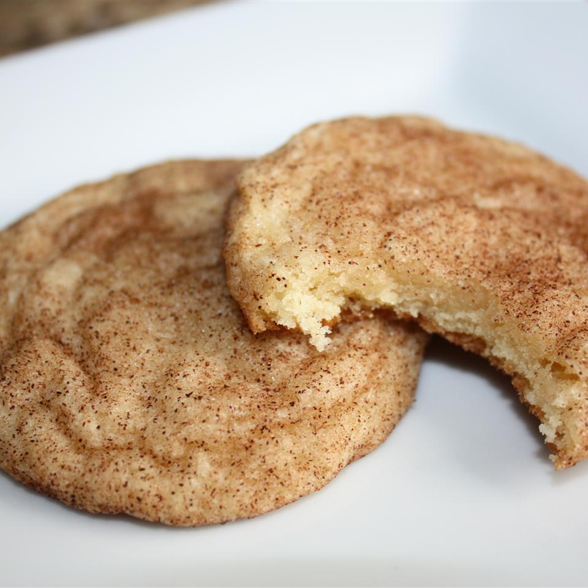

Mrs. Sigg's Snicker Doodle Cookies

Description
Try this snickerdoodle recipe for soft and chewy cinnamon-sugar cookies that everyone
will enjoy. With crispy edges, chewy centers, and a deliciously spiced sugar coating, these
cookies are a crowd please for sure. These snickerdoodle cookies have become very popular with
my friends at church — and my pastor loves them. You will too!
Ingredients
- 1 1/2 CUP(s) White Sugar
- 1/2 CUP Butter (Softened)
- 1/2 CUP Shortening
- 2 Large Eggs
- 2 TSP Vanilla Extract
- 2 3/4 CUP(s) All Purpose Flour
- 2 TSP Cream of Tartar
- 1 TSP Baking Soda
- 1/4 TSP Salt
Coating
- 2 TBSP White Sugar
- 2 TSP Ground Cinnamon
Steps
- Preheat the oven to 400 degrees F (200 degrees C).
- Make cookies: Beat sugar, butter, shortening, eggs, and vanilla in a large bowl until smooth and creamy.
- Whisk flour, cream of tartar, baking soda, and salt together in a separate bowl. Gradually mix dry ingredients mixture into the wet ingredients just until combined. Shape dough into walnut-sized balls.
- Make cinnamon-sugar: Combine sugar and cinnamon in a small bowl or zip-top plastic bag.
- Place dough balls in cinnamon-sugar and roll or shake until coated. Place 2 inches apart on ungreased baking sheets.
- Bake in the preheated oven until set but not too hard, 8 to 10 minutes, switching racks halfway through.
- Remove from the oven and immediately transfer to wire racks to cool.